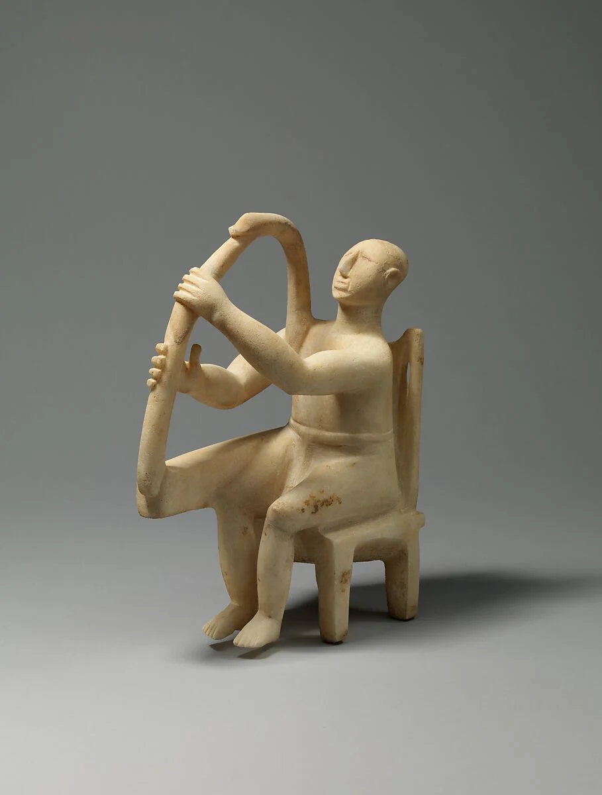

Reaching hands hold a rhythm
that has not quite ended.
The chair steadies; the harp opens outward.
Follow the arm through solid and void.
Warm ivory against quieter, cooler grey.
Value and temperature create separation.
Bright arm, dark interval, rounded weight.
This is photographic light, not an ancient setting.
Natural abrasives gradually ground
the harp’s slender, continuous arch.
An unidentified Cycladic craftsperson.
Biography and precise function are unknown.
Grounded feet; a head tilted back.
To me, a body carried away by music.
Three-quarter angle + soft side-top light.
Let the background pass through the object.
70% stone white / 20% mist grey / 10% deep brown
Editorial exercise colours, not object measurements.
Unidentified Cycladic maker · 2800–2700 BCE
The Metropolitan Museum of Art · 47.100.1
Original creator credited; image: public domain / CC0.
Independent interpretation. Present paleness is not proof
of an originally unpainted surface.